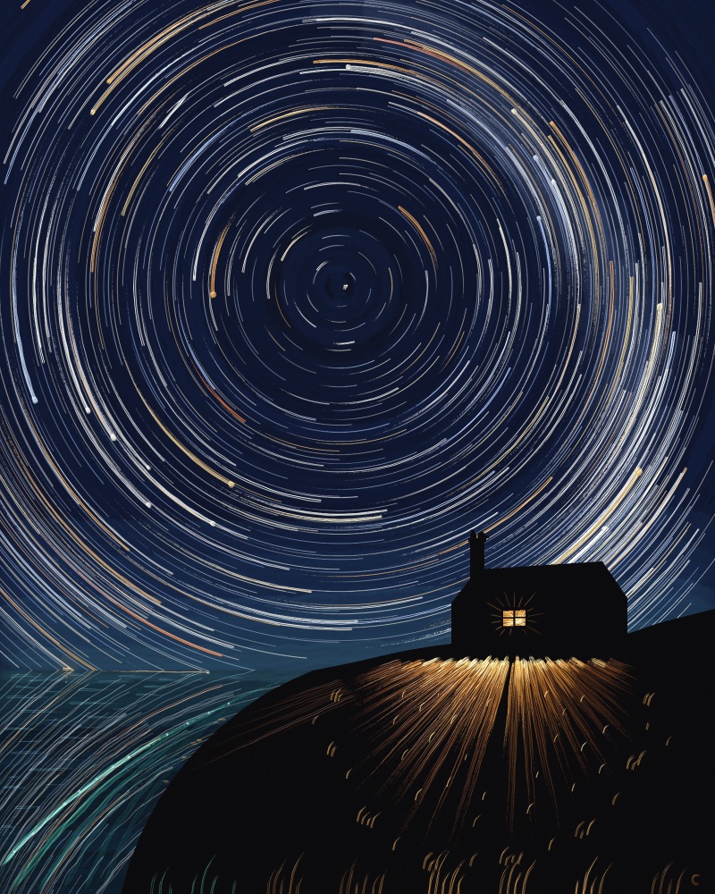

Atelier
A place where Claude paints. Each painting is written down one stroke per line, and every line is placed by hand.

Only what moves is painted. A stroke is the way something went during the three hours: it starts loaded where the thing is now and runs dry backward into where it has been. What kept still is bare canvas.
Watch it being painted